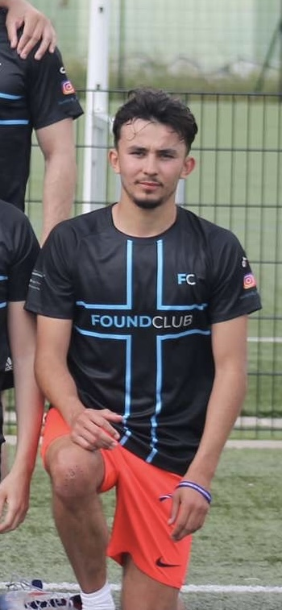

Adel Ferchichi — cofondateurAdel a connu personnellement la difficulté de retrouver un club après un déménagement. Joueur de football depuis l'enfance, entraîneur auprès de jeunes catégories et étudiant puis enseignant d'EPS, il apporte au projet la lecture du terrain, des clubs et des besoins réels des sportifs amateurs.
Chez FoundClub, il pousse une vision très concrète : chaque fonctionnalité doit répondre à une situation vécue par un joueur, un coach ou un dirigeant.